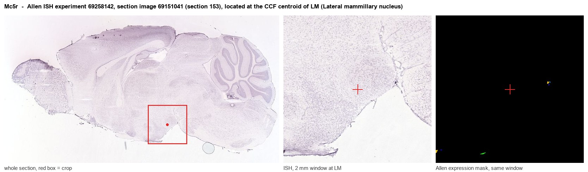
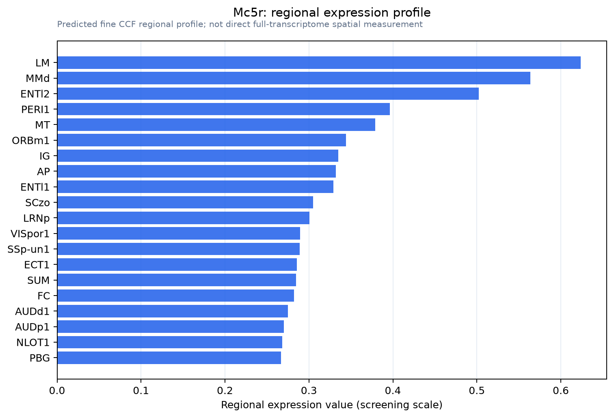

Mc5r
Melanocortin receptor 5 (MC5-R)
Spatial tier: REGION_BIASED · Class: GPCR · Top region: LM (Lateral mammillary nucleus) · Positive regions: 47/554
44.1Discovery Score
36.4Targetability Score
CEvidence grade C
What this means: Mc5r: fine CCF profile is region-biased toward LM (top regions: LM, MMd, ENTl2, PERI1, MT); this is a discovery lead, not direct proof.
Function in LM: evidence, prediction, innovation
- Gene function
- Mc5r encodes the melanocortin-5 receptor, the least characterised member of the melanocortin GPCR family. It is Gs-coupled and raises cAMP and PKA activity in response to alpha-MSH and ACTH derived from proopiomelanocortin, with pharmacology shaped by the accessory protein MRAP2. Its best-established role is control of exocrine gland secretion, plus reported actions on lipolysis and immune cells.
- Region function
- The lateral mammillary nucleus is the hypothalamic origin of the head-direction signal, transforming vestibular and dorsal tegmental input into directional tuning relayed via the mammillothalamic tract to anterodorsal thalamus.
- Published in this region
- none No region-specific literature found. The closest evidence is Chen et al. 1997, who showed MC5R-deficient mice have exocrine gland dysfunction and defective thermoregulatory sebum production, placing the receptor's main in vivo role outside the brain; Shukla et al. 2012 reported region-specific differences in brain melanocortin receptor levels in lean-phenotype rats, and Lute et al. 2014 described biphasic melanocortin effects on metabolic rate and body temperature.
- Predicted function
- Prediction: if MC5R is genuinely present on lateral mammillary neurons it would supply a Gs, cAMP-raising melanocortin input to a nucleus with no described melanocortin signalling, letting arcuate POMC tone modulate head-direction cell excitability with energy state, the coupling foraging navigation would require. Selective agonism with PG-901 should raise firing gain and stabilise directional tuning during exploration, whereas Mc5r knockout or PG-20N should leave basic tuning intact but degrade navigation efficiency under fasting or thermal stress.
- Innovation
- ★★★★★ 5/5 MC5R has almost no central nervous system literature and none in the head-direction system, yet selective pharmacology and a knockout mouse already exist.
- Tools
- Mc5r knockout mice (Chen et al. 1997); selective agonist PG-901 and antagonist PG-20N; alpha-MSH and NDP-MSH; anti-MC5R antibodies; MRAP2 co-expression needed for full pharmacology; no Mc5r-Cre driver reported.
- References
Direct evidence located at the region

Allen ISH experiment 69258142, section image 69151041 (section 153): the section that contains the CCF centroid of Lateral mammillary nucleus according to the Allen image-to-atlas alignment (reference_to_image), with a 2 mm window around that point. Left: whole section, red box = window. Middle: ISH signal. Right: Allen's expression-mask view of the same window. open this image in the Allen viewer
Look it up yourself: Allen Mouse Brain ISH for Mc5rAllen reference atlas: LM (structure 210)ABC Atlas MERFISH viewer(in the ABC Atlas choose dataset MERFISH-C57BL6J-638850-CCF, colour cells by gene "Mc5r" or by parcellation_substructure "LM")All genes confined to LM + 3-D brain
Direct spatial evidence
MERFISH REGION LOCATOR

Regional expression figure

Predicted WMB × fine-CCF profile; not direct full-transcriptome spatial measurement.
Spatial profile
Evidence and specificity
- Evidence status
- PREDICTED_FINE
- Direct sources
- None; predicted localization only
- Exclusive threshold
- 12 positive regions out of 554
- Spatial specificity
- 0.283
- Top-region fraction
- 0.043
- Filter status
- PASS
Interpretation limits
- Cell-type-to-region projection is imputed expression, not direct spatial measurement.
- Adult reference atlases do not establish stability across age, sex, strain, state, or disease.
- Transcript abundance does not guarantee protein abundance or genetic-tool performance.